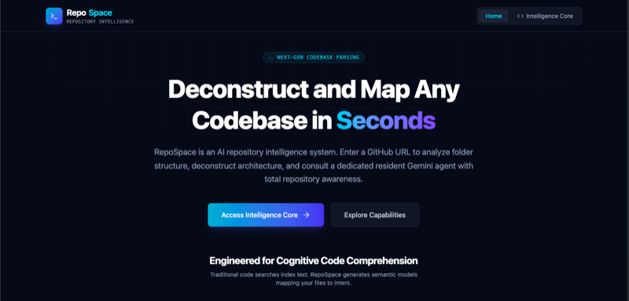
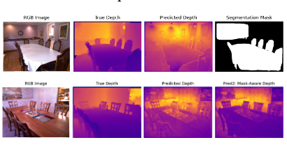

University of California, Los Angeles
Computer Science, B.S. · Samueli School of Engineering
Coursework
I'm a first-year at UCLA studying Computer Science. I am interested in software engineering, AI, and robotics. In my free time, I enjoy playing Badminton, working out, trying new food, and hanging out with friends. Feel free to reach out!
Computer Science, B.S. · Samueli School of Engineering
Coursework
High School Diploma · Pleasanton, CA
Highlights
Selected out of ~30,000 applicants to attend Y Combinator's AI Startup School in San Francisco. Learned from leading figures in AI, including Jensen Huang and Sam Altman, and was given $25,000+ in AI credits.
Developed regression-based monocular depth estimation model under mentorship of physics PhD student. Paper under review for publication in the International Journal of High School Research.
Helped build full-stack gradebook software that syncs with existing grading software. Expanded to 4,500+ students and teachers across school districts in my area.

AI Repository Intelligence System capable of ingesting Github repositories and aiding with inquires and feature development. Built as part of the Google AI Agents Capstone Challenge.
Open-Source Autonomous Control Algorithm which uses PID and a waypoint-following pipeline for generating steering correction and throttle/braking control commands from real-time vehicle environment. Placed 4th in UC Berkeley ROAR Competition.

Regression-based monocular depth estimation model trained on the NYU Depth v2 dataset. Achieved an average mean squared error of ~0.05 m2 over a subset of the dataset while remaining fully interpretable vs. CNN baselines.